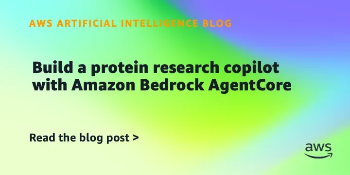
ЛабораторииКод
AWS показала, как построить ИИ-ассистента для поиска пептидов на Amazon Bedrock AgentCore
Как построить ИИ-ассистента для поиска пептидов на Amazon Bedrock
AWS Machine Learning Blog
23 июн.Сохранённые материалы за этот день.
38 материалов

Как построить ИИ-ассистента для поиска пептидов на Amazon Bedrock

Как GPT‑5 Pro помогла иммунологу найти объяснение трёхлетнему научному парадоксу
Claude Tag станет постоянным участником ваших Slack-каналов — читает чаты, выполняет задачи и следит за прогрессом команды.
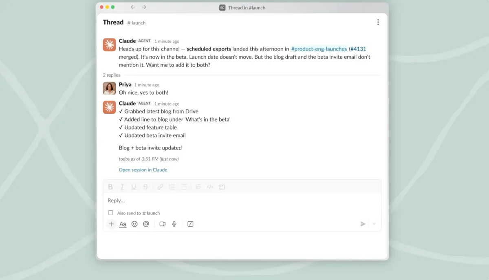
Claude Tag — это ИИ-помощник Anthropic, который постоянно находится в вашем Slack и запоминает контекст.
Увольнение библиотекаря за Pride-стенд: как страх перед сообществом разрушает библиотечные принципы
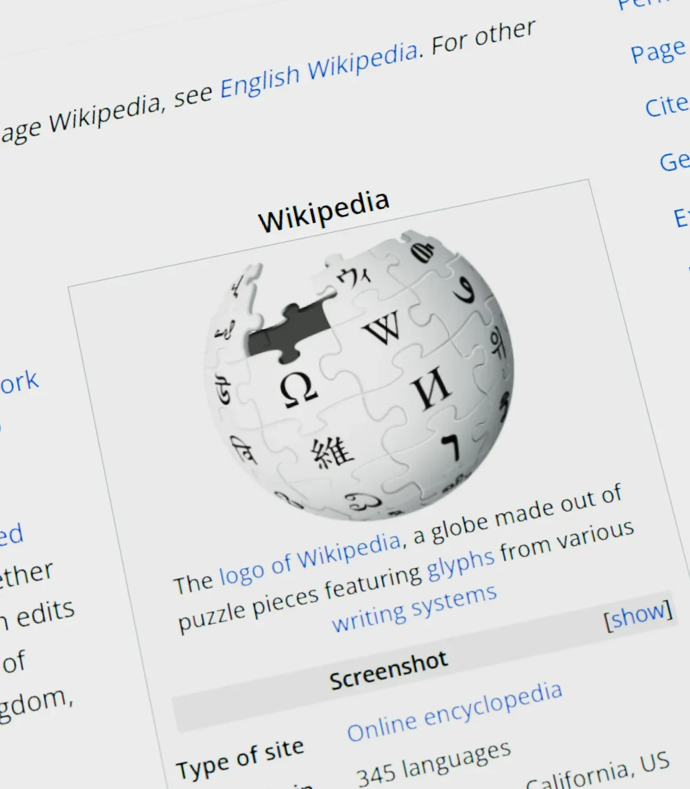
Создатель Wikipedia заблокирован за попытку привести «консервативных» редакторов
Azure Copilot Observability Agent: агентный мониторинг для облачных систем в общем доступе
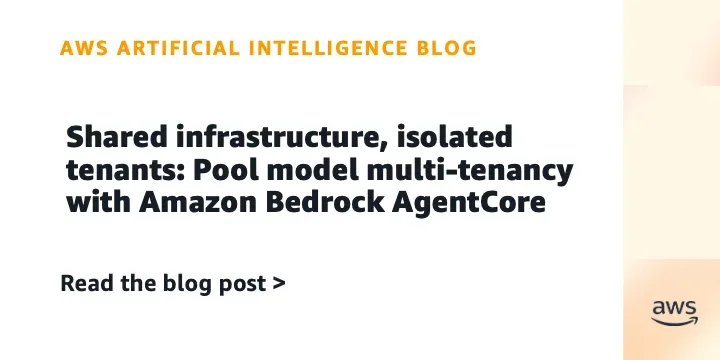
AWS показала, как строить мультитенантные ИИ-агенты с изоляцией, уровнями обслуживания и контролем затрат на Bedrock AgentCore.
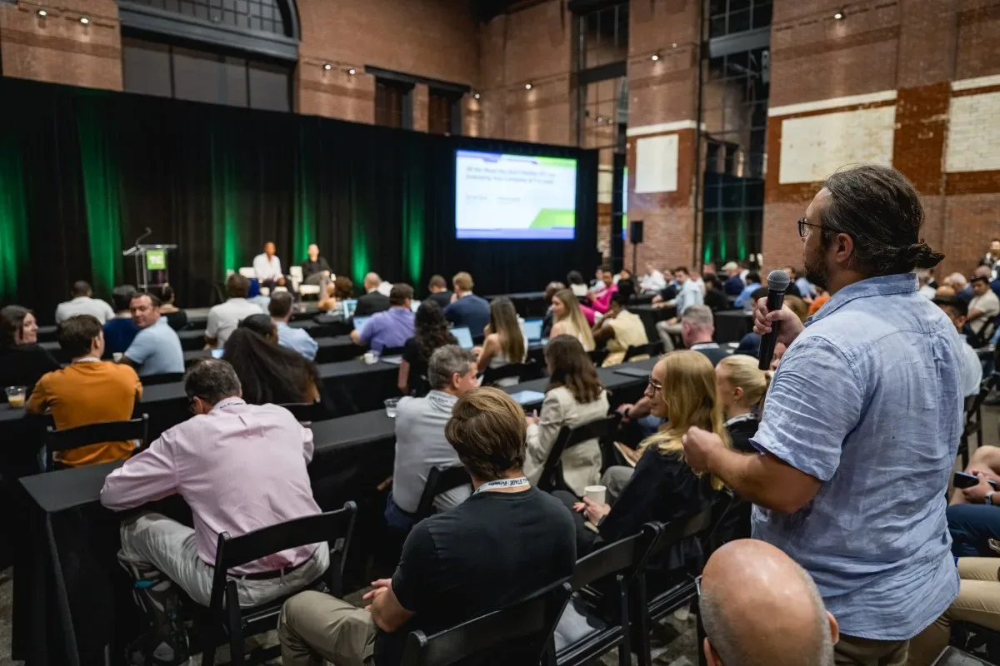
До 26 июня — early bird на конференцию для основателей. Скидка до $190.

Midjourney переключилась с генерации изображений на медицинские сканеры — но эксперты сомневаются в заявленных возможностях.
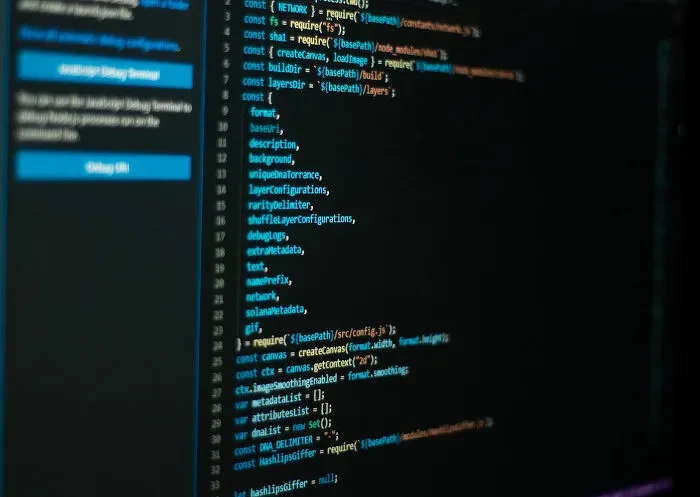
Белый дом приказал Anthropic ограничить доступ к ИИ иностранцам после того, как Mythos 5 якобы взломал системы АНБ за часы
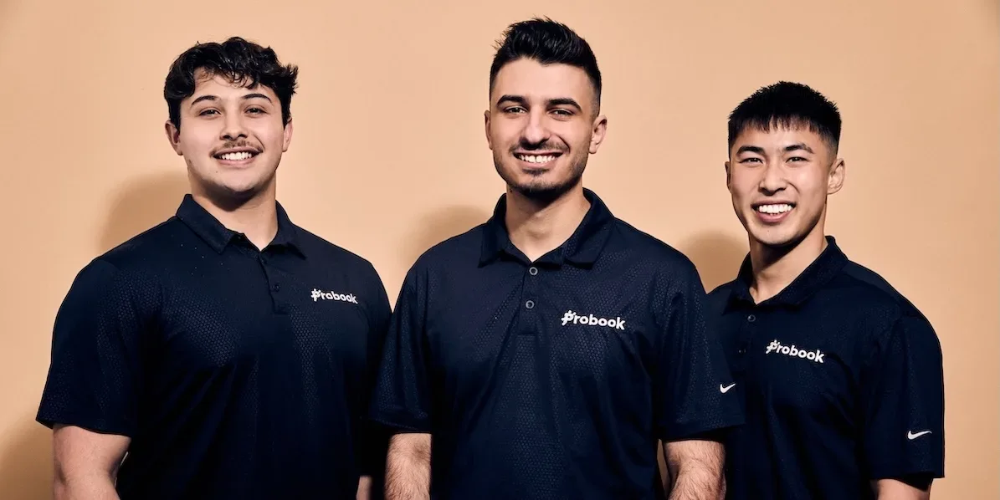
Probook объединяет dispatch, клиентский сервис и планирование в одной ИИ-системе для ремонтных и сервисных компаний.
Утекший документ MSG: досье на критиков распознавания лиц
NVIDIA представила Agent Toolkit — открытую платформу для создания ИИ-агентов, которые можно настраивать и контролировать.
Fika Jobs привлек $4 млн на платформу, где ИИ-агент проводит видеоинтервью с кандидатами, а работодатели смотрят их профили — как LinkedIn встречает TikTok.
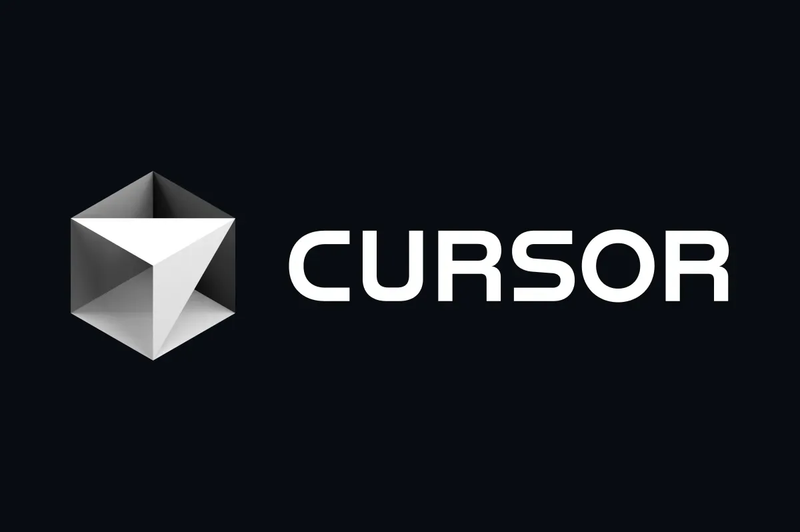
Cursor раскрыл детали собственной LLM, анонсировал Git-сервис для агентов и мобильное приложение для управления кодом.
ByteDance представила Seedance 2.5 — видеомодель, создающую ролики до 30 секунд без склейки, с поддержкой смены сцен и 50 входных файлов.
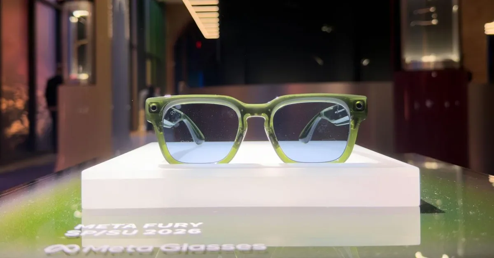
Meta отказалась от Ray-Ban ради снижения цены на умные очки
Sony оснастила Xperia 1 VIII ИИ-ассистентом, который пытается «улучшить» ваши фото — и почти всегда портит их
Коллективный иск в Калифорнии: операторов АЗС обвинили в сговоре с помощью ИИ от Kalibrate.
RuClaw от «К2Тех» — платформа для безопасных ИИ-агентов с поддержкой российских LLM и полным аудитом.
«М.Видео» вкладывает 9 млрд рублей в ИИ и ИТ — на фоне падения прибыли и роста маркетплейса.
TerraMaster представила 4-дисковый NAS с ИИ-управлением на естественном языке
Домашний сервер, CouchDB и MCP: интеграция ИИ-агентов с заметками Obsidian без облака
Практическое руководство по интеграции LLM в анализ данных: от текста до аудио. Автор — преподаватель Корнеллского университета.
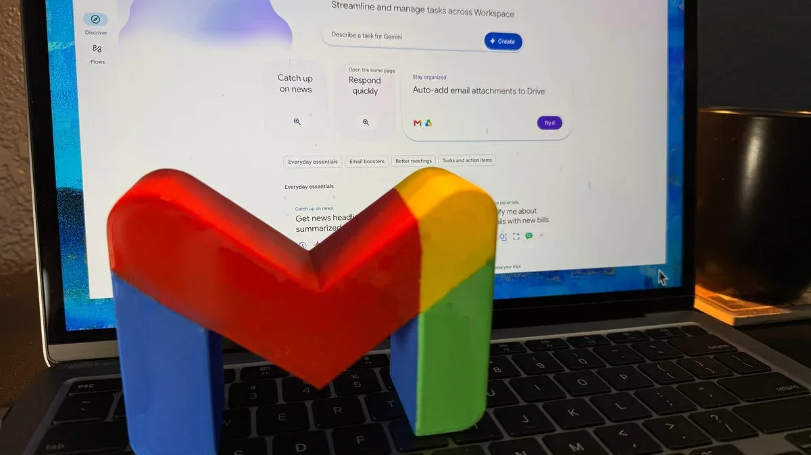
ИИ-фильтры в Gmail: мощный инструмент с жёстким лимитом — 2000 писем в месяц.
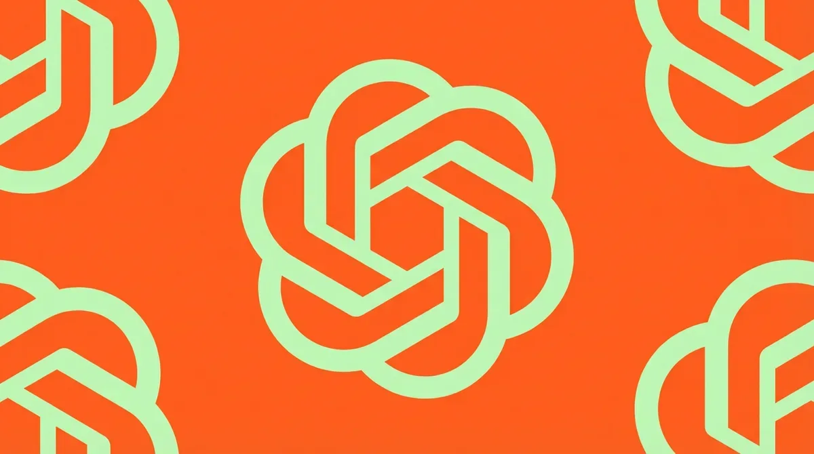
OpenAI выпустила GPT-5.5-Cyber, новый эталон в кибербезопасности, и обновила Codex Security. Партнёрская сеть включает 25+ компаний и правительства.
ИИ-супервайзер Fedot.ai от «Цифровой логистики» взял на себя контроль качества в контакт-центре «СберМобайла».
Инциденты с Replit и Operator показали, почему ИИ-инженерам нужны собственные evals — и как их строить.
Нейросеть на C++ прогнозирует ВВП и работает на Arduino за 300 рублей — без TensorFlow и PyTorch.